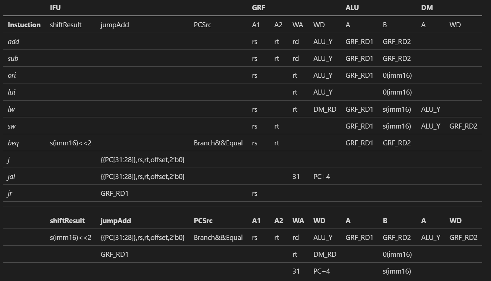
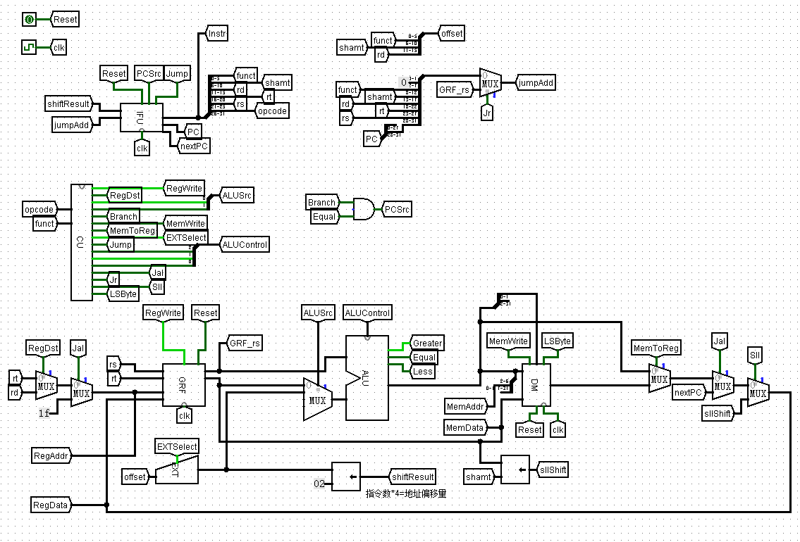
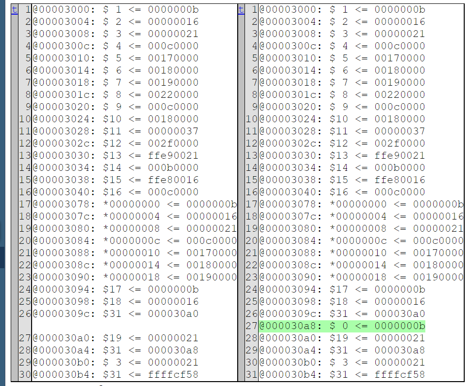

P4 设计文档
CPU 设计文档 ### 支持指令
add, sub, ori, lui, lw, sw, beq,bne, j, jr, jal, sll, nop
(其中 add，sub 为无符号加减法)
| Instuction | |
|---|---|
| add | GPR[rd] = GPR[rs] + GPR[rt] |
| sub | GPR[rd] = GPR[rs] - GPR[rt] |
| ori | GPR[rt] = GPR[rs] | ZeroExt(Imm) |
| lui | GPR[rt] = {imm, 16’b0} |
| lw | R[rt] = Mem[GPR[rs]+sign_ext(offset)] |
| sw | Mem[GPR[rs]+sign_ext(offset)] = R[rt] |
| beq | if (GPR[rs] == GPR[rt]) PC = PC + 4 + BranchAddr |
| j | PC = JumpAddr |
| jal | PC = JumpAddr; GPR[31] = PC + 4 |
| jr | PC = GPR[rs] |
| sll | GPR[rd] = {GPR[rt] [31-s:0] , s{0}} |
| bne | if (GPR[rs] != GPR[rt]) PC = PC + 4 + BranchAddr |
数据通路

使用模块
一、IFU（Instruction Fetch Unit）
- 包括 PC 和 IM
- 容量为 16KiB（4096 × 32bit）: reg [31:0] IM [0:4095]
- 注意起始地址为 0x00003000，address 应为 PC-0x00003000，后再取 [13:2] 位，在 IM 堆中对应地址
| 端口名 | 输入 / 输出 | 位宽 | 功能 |
|---|---|---|---|
| clk | in | 1 | 时钟信号 |
| reset | in | 1 | 同步复位 |
| PCSrc | in | 1 | 下一指令地址选择信号 |
| Jump | in | 1 | 跳转控制信号 |
| shiftResult | in | [31:0] | 偏移后的指令地址 |
| jumpAdd | in | [31:0] | 直接跳转的指令地址 |
| PC | out | [31:0] | 输出当前地址 |
| D | out | [31:0] | 输出读取指令 |
二、GRF（General Register File）
- 存储 $0~$31 这 32 个寄存器数据：reg [31:0] GRF [31:0]
- 具有 同步复位，读、写功能
- $0 寄存器输入为常数 0（如果 WA==0，不写）
| 端口名 | 输入 / 输出 | 位宽 | 功能 |
|---|---|---|---|
| clk | in | 1 | 时钟信号 |
| reset | in | 1 | 同步复位 |
| WE(RegWrite) | in | 1 | 写入使能信号 |
| A1(GRF_A1) | in | [4:0] | 输出数据到 RD1 的寄存器的地址 |
| A2(GRF_A2) | in | [4:0] | 输出数据到 RD2 的寄存器的地址 |
| WA(GRF_WA) | in | [4:0] | 输入到寄存器的地址 |
| WD((GRF_WD) | in | [31:0] | 写入的数据 |
| RD1(GRF_RD1) | out | [31:0] | RD1 输出的数据 |
| RD2(GRF_RD2) | out | [31:0] | RD2 输出的数据 |
三、ALU（Arithmetic & logical Unit）
提供 32 位加、减、或运算、高 16 位赋 0 以及大小比较功能
加减法按无符号处理
| 端口名 | 输入 / 输出 | 位宽 | 功能 |
|---|---|---|---|
| op | in | [2:0] | ALU 功能控制信号 000：加；001；减；010：或；011：高 16 位赋 0 |
| A(ALU_A) | in | [31:0] | 输入 1 |
| B(ALU_B) | in | [31:0] | 输入 2 |
| Y((ALU_Y) | out | [31:0] | 输出 |
| Greater | out | 1 | A>B |
| Equal | out | 1 | A=B |
| Less | out | 1 | A<B |
四、DM（Data Memory）
- 容量为 16KiB（4096 × 32bit）: reg [31:0] DM [0:4095]
- 具有 同步复位，读、写功能，复位地址为 0x00000000
| 端口名 | 输入 / 输出 | 位宽 | 功能 |
|---|---|---|---|
| clk | in | 1 | 时钟信号 |
| reset | in | 1 | 同步复位 |
| WE(MemWrite) | in | 1 | 写控制信号 |
| A(DM_A) | in | [4:0] | 要读 / 写的存储器的地址 |
| WD(DM_WD) | in | [31:0] | 写入的数据 |
| RD(DM_RD) | out | [31:0] | 读出的数据 |
五、EXT（Bit Extender）
- 将 16 位偏移量 / 立即数拓展至 32 位
| 端口名 | 输入 / 输出 | 位宽 | 功能 |
|---|---|---|---|
| EXTSelect | in | 1 | 选择符号拓展 / 无符号拓展（0/1） |
| in(EXT_in) | in | [15:0] | 16 位输入 |
| out(EXT_out) | out | [31:0] | 拓展后 32 位输出 |
六、CU（Control Unit）
- 生成所有控制信号的组合逻辑
- 根据每条指令的数据通路列出如下控制信号表格
- R 指令控制信号为（R==0)
- 分别根据 Opcode 和 Funct 每一位和与门控制非 R 和 R 型指令的选择
- 再将指令信号通过或连接，表示某一控制信号被哪些指令选择
| Instuction | Opcode（in) | Funct (in) | RegWrite | GRF_WASrc | GRF_WDSrc | ALUSrc | ALUSelect | MemWrite | EXTSelect | Branch | BranchSelect | Jump | Jr |
|---|---|---|---|---|---|---|---|---|---|---|---|---|---|
| add | 000000 | 100000 | 1 | 001 | |||||||||
| sub | 000000 | 100010 | 1 | 001 | 001 | ||||||||
| ori | 001101 | 1 | 1 | 010 | 1 | ||||||||
| lui | 001111 | 1 | 1 | 011 | 1 | ||||||||
| sw | 101011 | 1 | 1 | ||||||||||
| lw | 100011 | 1 | 001 | 1 | |||||||||
| beq | 000100 | 0 | 1 | 000 | |||||||||
| j | 000010 | 1 | |||||||||||
| jal | 000011 | 1 | 010 | 010 | 1 | ||||||||
| jr | 000000 | 001000 | 000 | 1 | 1 | ||||||||
| sll | 000000 | 000000 | 1 | 001 | 011 | ||||||||
| bne | 000101 | 1 | 001 |
logisim 图示

测试
注：自造指令的同时借助 zby 同学的自动化测试工具大范围覆盖，以下仅放出自造指令，以及自动化测试结果截图。
asm 指令
1 | ori $1,11 |
机器码
1 | 34040100 |
输出（文本比较）

左侧为 zby 测评机自 mars 导出的输出，右侧为 verilog 中的输出（0 号寄存器写入输出可有可无）
思考题
- DM 地址来为 GPR[rs]+sign_ext(offset)，来自 EXT 对寄存器中地址 rs 寄存器的值符号拓展的输出
- 为 [11:2] 以对应从 DM 地址 32 位中截取的 [11:2] 位，截去低 2 位，从字节为单位的 PC 对应到以 32bit 为单位的 DM
assembly // 指令对应的控制信号如何取值 always @(*) begin if(add) begin assign RegWrite=1; assign RegDst=1; end else if(sub) begin assign RegWrite=1; assign RegDst=1; assign ALUControl=3'b001; end end // 控制信号每种取值所对应的指令 assign RegWrite=(add||sub||ori||lw||lui||jal); assign RegDst=(add||sub); assign ALUSrc=(ori||lw||sw||lui); assign Branch=(beq); assign MemWrite=(sw); assign MemToReg=(lw); assign EXTSelect=(ori||lui); assign Jump=(j||jal||jr); assign ALUControl=sub?3'b001: ori?3'b010: lui?3'b011: 3'b000; assign Jal=(jal); assign Jr=(jr);第一种方法优点在于添加新指令，修改更加集中，不会遗漏控制信号；缺点为当指令种类过多时，篇幅过长。
第二种方法优点为控制条件更加集中，可读性更强，如 ALU 信号含义更明确，不会错误对应；缺点为增加新指令时需修改多处。
信号优先级：
同步复位：clk>reset
异步复位：reset>clk
add,addi 具有溢出检测，如果溢出，则不讲加法运算结果写入寄存器。但此结果截断低 32 位后与 addu,addiu 的运算结果相同。此时如果忽略溢出信号，照常写入，则写入值相同，即 add 与 addu，addi 与 addiu 等价